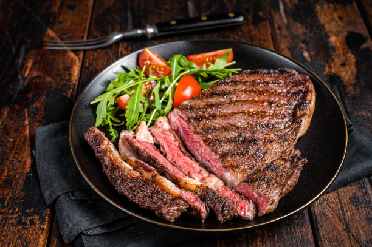

Carne Kobe Premium
Corte japonés de alta calidad, suave, jugoso y con un marmoleo excepcional.
- Corte Kobe certificado
- Sal marina y pimienta
- Aceite de oliva
- Acompañado de vegetales al vapor
Corte japonés de alta calidad, suave, jugoso y con un marmoleo excepcional.

Pollo a la plancha acompañado de un guisado fresco y nutritivo.
Un filete de mignon con salsa de vino y verduras

Un plato fresco con sabor tropical.

Un solomillo tierno acompañado de una delicada salsa de setas.
Tomahawk a la parrilla, jugoso y lleno de carácter, acompañado de sabores que realzan su esencia